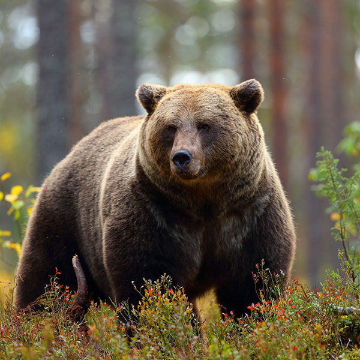
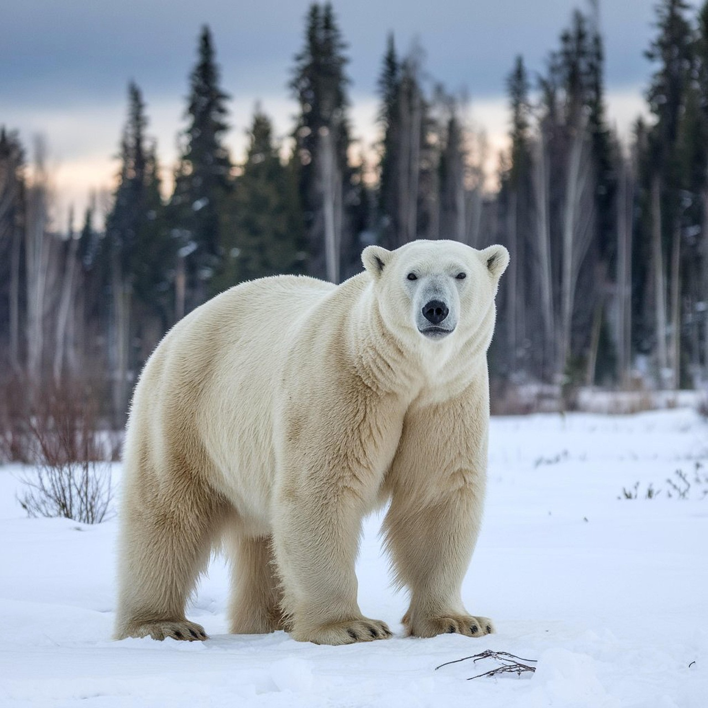
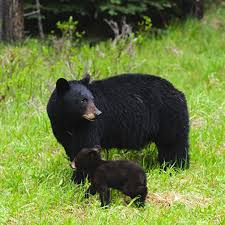

Bears are carnivoran mammals of the family Ursidae. They are classified as caniforms, or doglike carnivorans. Although only eight species of bears are extant, they are widespread, appearing in a wide variety of habitats throughout most of the Northern Hemisphere and partially in the Southern Hemisphere. Bears are found on the continents of North America, South America, and Eurasia. Common characteristics of modern bears include large bodies with stocky legs, long snouts, small rounded ears, shaggy hair, plantigrade paws with five nonretractile claws, and short tails.
While the polar bear is mostly carnivorous, and the giant panda is mostly herbivorous, the remaining six species are omnivorous with varying diets. With the exception of courting individuals and mothers with their young, bears are typically solitary animals. They may be diurnal or nocturnal, and they have an excellent sense of smell. Despite their heavy build and awkward gait, they are adept runners, climbers, and swimmers. Bears use shelters, such as caves and logs, as their dens; most species occupy their dens during the winter for a long period of hibernation, up to 100 days.
Bears have been hunted since prehistoric times for their meat and fur. They have also been used for bear-baiting and other forms of entertainment, such as being made to dance. With their powerful physical presence, they play a prominent role in the arts, mythology, and other cultural aspects of various human societies. In modern times, bears have come under pressure through encroachment on their habitats and illegal trade in bear parts, including the Asian bile bear market. The IUCN lists six bear species as vulnerable or endangered, and even least concern species, such as the brown bear, are at risk of extirpation in certain countries. The poaching and international trade of these most threatened populations are prohibited, but still ongoing.



Bears are generally bulky and robust animals with short tails. They are sexually dimorphic with regard to size, with males typically being larger. Larger species tend to show increased levels of sexual dimorphism in comparison to smaller species. Relying as they do on strength rather than speed, bears have relatively short limbs with thick bones to support their bulk. The shoulder blades and the pelvis are correspondingly massive. The limbs are much straighter than those of the big cats as there is no need for them to flex in the same way due to the differences in their gait. The strong forelimbs are used to catch prey, excavate dens, dig out burrowing animals, turn over rocks and logs to locate prey, and club large creatures.